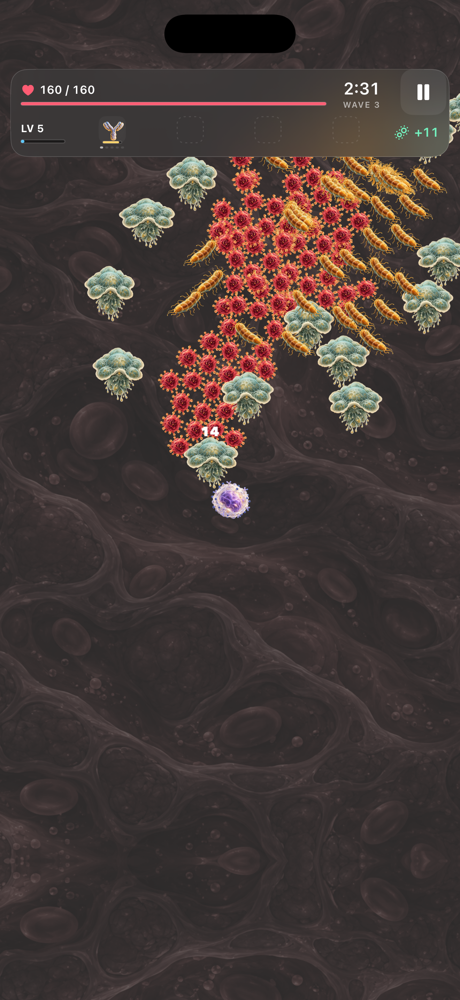
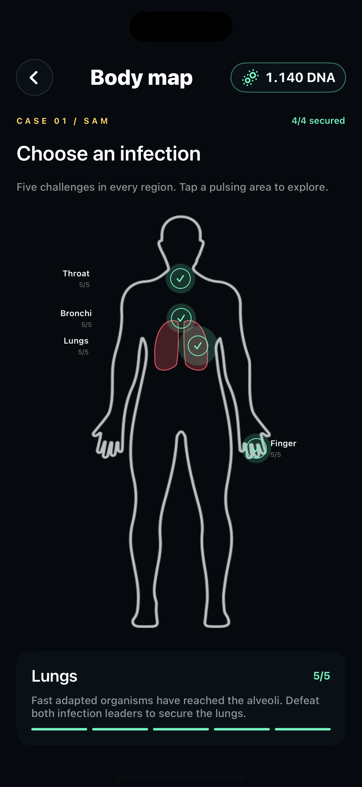
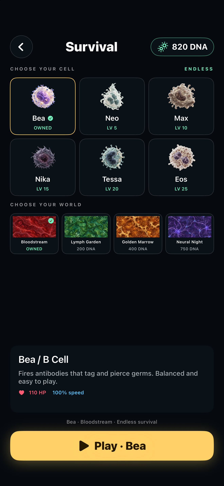

Immune Rush
Germ survivor roguelite for iPhone and iPad
You are a white blood cell. Germs have invaded the body and you are its last line of defense. Drag anywhere to move, your cell attacks on its own. Collect crystals, level up, pick upgrades and evolve your weapons. Survive rising infection pressure and bank DNA for your next run.



Support
Questions, bugs or ideas? Write to ecansubasoglu@gmail.com. Please include your device model and iOS version if something does not work.
Published by Eda Cansu Basoglu.
FAQ
Which mode should I choose? Play opens endless Survival with six cell choices and cosmetic worlds. Case 01 / Sam opens twenty story challenges across four body regions.
How do I move? Put your thumb anywhere on the screen and slide. There is no fixed joystick.
Where is my progress saved? On your device only. Deleting the app deletes your progress.
How do I unlock new cells? DNA is saved as you play. Earn it from kills, time and bosses. Open Play to choose a cell. Neo costs 1,000 DNA, Max 2,000, Nika 3,000, Tessa 4,000 and Eos 5,000. Each cell also has a level requirement; unlocking equips it.
What does the Lab do? Spend earned DNA on permanent upgrades that apply to every cell. Most begin at 80 DNA; each new level costs more.
How do I change the background? Open Play and choose a world below the cells. Bloodstream is free; Lymph Garden costs 200 DNA, Golden Marrow 400 and Neural Night 750. Purchased worlds stay on this device and are cosmetic. Story missions use their regional environment.
Can I leave a run? Pause and choose Finish & keep DNA. Your banked balance stays on this device, including after closing the app. A cold launch starts a new run.
Can I adjust the audio? Settings → Audio has independent switches and volume controls for opening, lobby and game music and sound effects. Music stops while you choose a level-up upgrade. Phone volume and Silent Mode also affect sound.
Can I change visibility? Settings → Display adjusts background brightness and camera distance. Vibration and damage numbers are under Settings → Game.